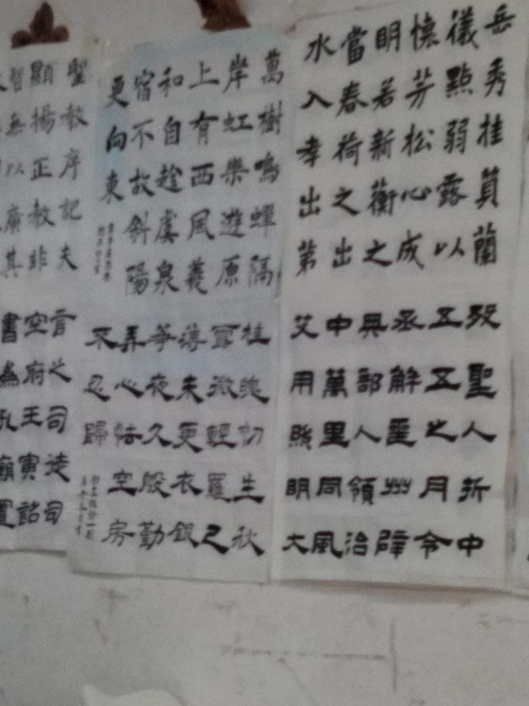
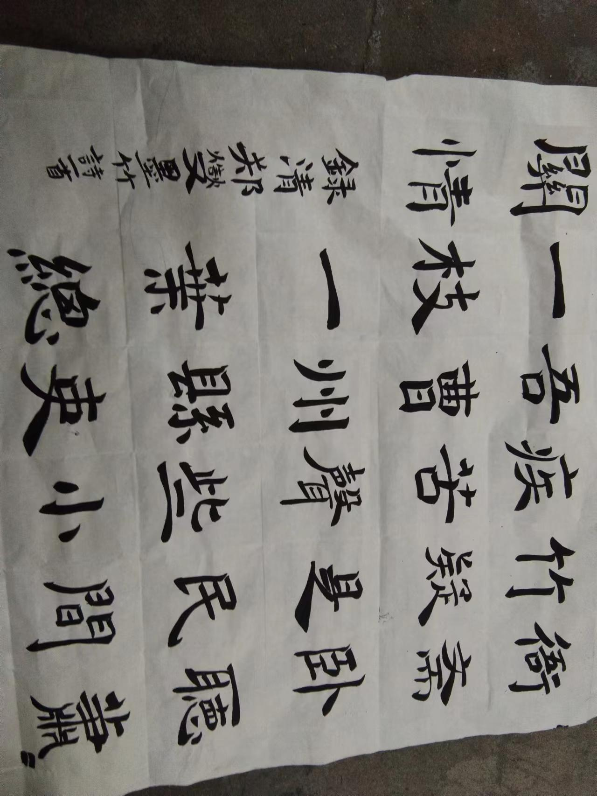
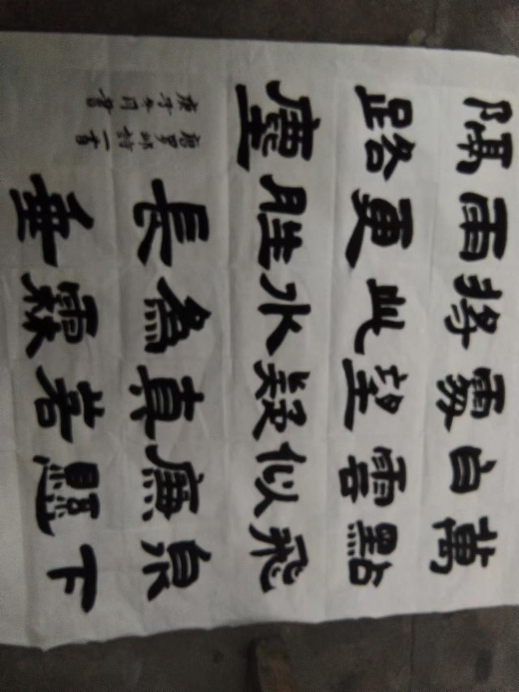

上溯秦汉，下开风气，篆隶行融会贯通。赵之谦于篆书，或因其学篆刻，最初源自邓石如、吴让之，其次受同事胡澍影响。当时的篆刻，皆以小篆入印。
赵子谦晚年隶书风格 笔法则在篆书与正书之间，中锋为主，兼用侧锋。行笔则寓圆于方，方圆结合。结体扁方，外紧内松，宽博自然。平整之中略取右倾之势，奇正相生。
《雁塔圣教序》引领大唐楷书新格，书法史上褚遂良因此被重重地书上一笔。初唐三家——欧、虞、褚并称书坛，但真正地开启唐代楷书门户者，非褚氏遂良一人莫属。纵观唐中期的颜真卿、徐浩，莫不受其影响，可以说唐朝中后期书坛风貌是由褚遂良启导的，特别是《雁塔圣教序》更具有创新的时代意义。——王佑贵《褚遂良与〈雁塔圣教序〉》。